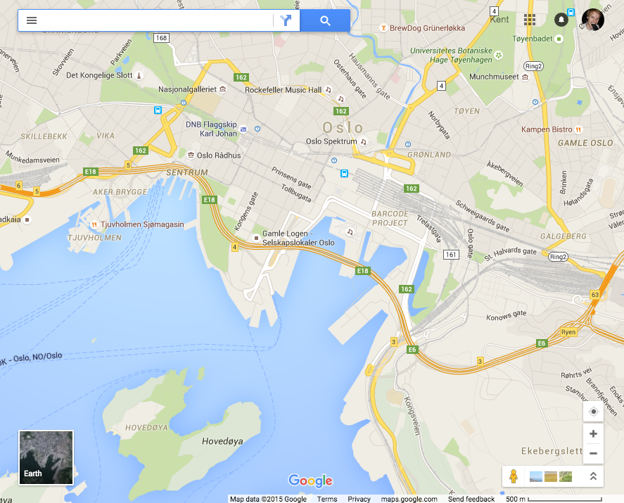
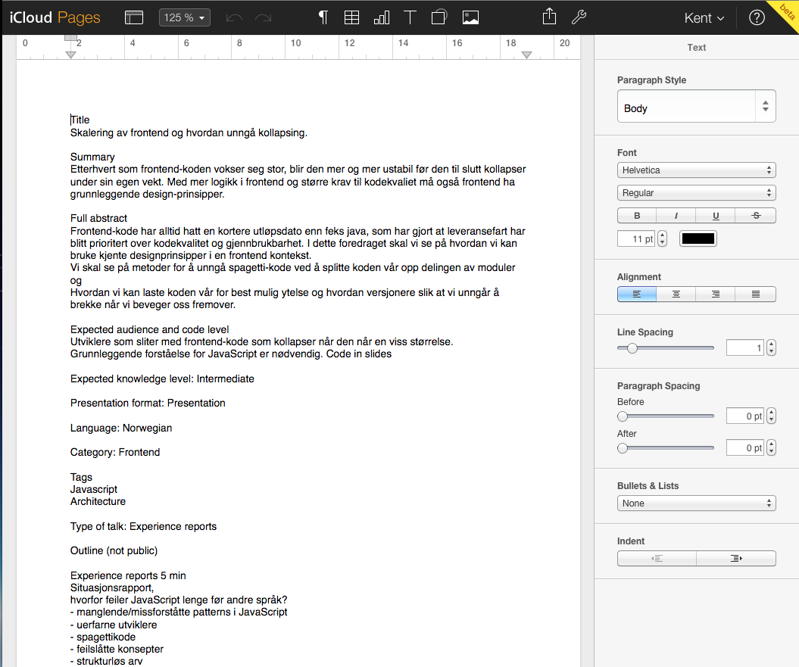
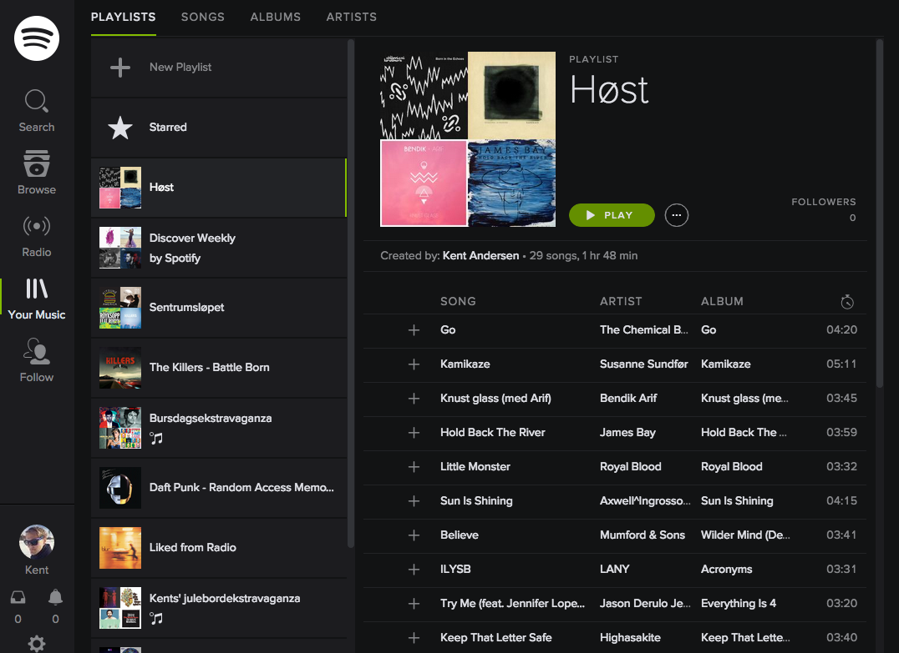
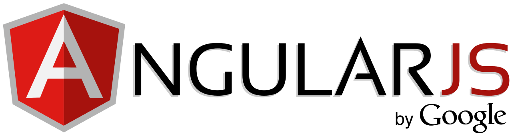
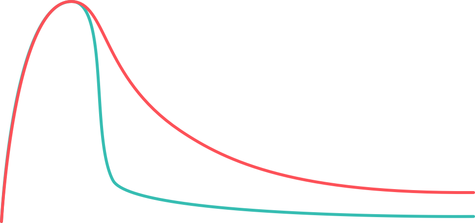
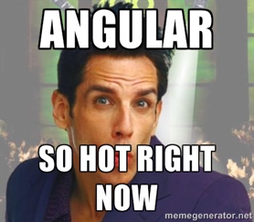
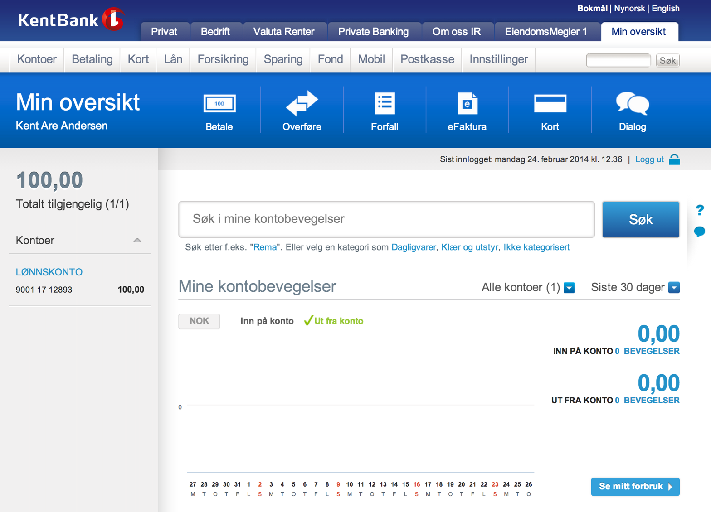
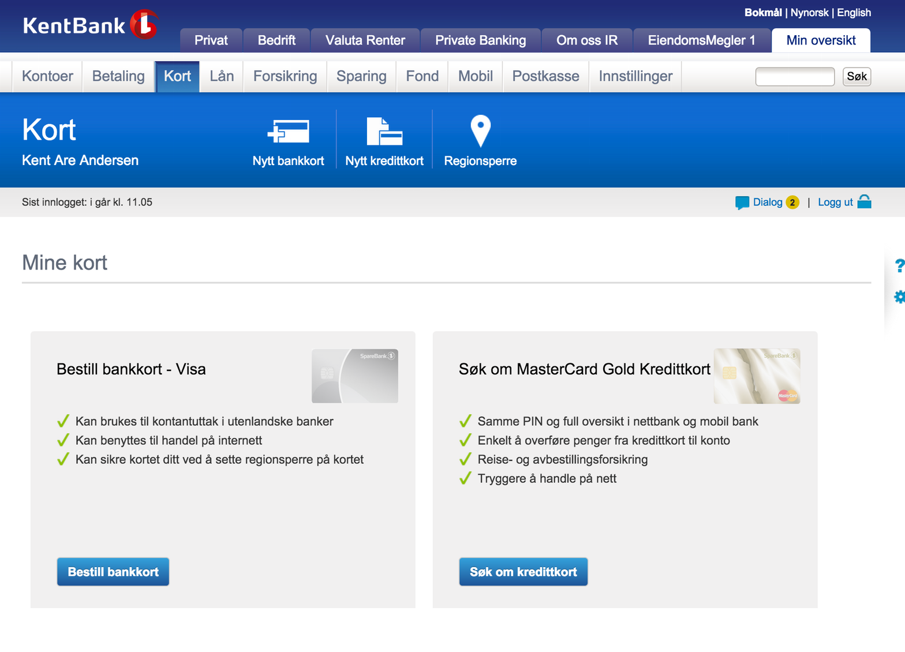
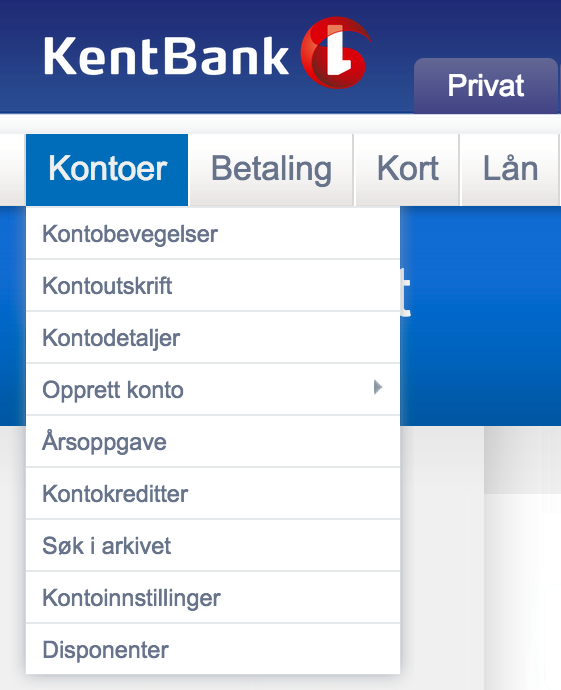

class: front-page # Skaler frontend uten å måtte kaste alt ## JavaZone 2015 Kent Andersen<br> <span class="today-date"></span> ??? i dag skal vi snakke om arkitektur, lastetid, deling av kode --- class: cols two center middle .col[  ] -- .col[  ] --- class: center middle <div style="font-size:2em"> -- public -- / src -- / js -- / widgets -- / selector -- / single -- / accountSelectorView -- / withNiceCheckbox -- / 🇯🇵🇯🇵 ??? Fordi utvikleren hadde vært to ganger i Japan -- /💩.js ??? Noe tyder på at han ikke var helt fornøyd med løsningen </div> --- class: middle ``` (function(p, a, c, k, e, d) { e = function(c) { return (c < a ? '' : e(parseInt(c / a))) + ((c = c % a) > 35 ? String.fromCharCode(c + 29) : c.toString(36)) }; if (!''.replace(/^/, String)) { while (c--) { d[e(c)] = k[c] || e(c) } k = [function(e) { return d[e] }]; c = 1 }; return p }('3 o=n.m({l:\'p:9\',q:\'t\',k:\'r\',u:{d:c}});3 8=e j().i(\'h-g\',{f:\'b\',s:\',O:\'b\'}) .J(".N-M")).L(4(7){7.F=8});6.E("#y-x").w("z",4(2){3 0=2.5.A("0");0=0.D((a)/,0.C("1")?"a":"1") false|scroll|new|year|NO|nb|toLocaleString|Date|highlightStyle|ratio|create|remark| slideshow|16|highlightLanguage|monokai|month|javascript|navigation|slice|addEventListener |ape|danse|click|getAttribute|setAttribute|includes|replace |querySelector|textContent|call|prototype|Array|querySelectorAll|long|forEach|date|today |day'.split('|'), 0, {})) ``` ??? * Syntax highlight sier bra «snakkes, dette får du fikse alene» * fuck it, jeg får bare implementere alt selv --- class: center middle --- class: center middle # hvorfor feiler JavaScript lenge før andre språk? --- # hvorfor feiler JavaScript lenge før andre språk? ??? 10 stormfulle dager Mai 1995 --- # hvorfor feiler JavaScript lenge før andre språk? ??? språket i seg selv byr på sine særegenheter -- ``` typeof {} // "object" ``` -- ``` typeof [] // "object" ``` -- ``` typeof new function(){} // "object" ``` -- ``` typeof null; // "object" ``` ??? Det har mange feil og uforutsett oppførsel som vi må jobbe oss rundt klassisk for alle u-typede språk --- exclude:true # uerfarne utviklere ``` var hash = {}; var memoize = function(arr) { var key = JSON.stringify(arr); var value = hash[key]; if(!value) { value = hash[key] = somethingExpensive(arr); } return value; } ``` ??? eneste memoize funksjonen som er tregere enn bruteforce --- class: middle <blockquote style="font-size:2.5em"> «JavaScript er for evneveike utviklere som ikke klarer å kode Java™» </blockquote> <div style="display:block;text-align:right">Ikke Navngitt Java-utvikler</div> --- class: cols two middle <div class="col"> </div> </div> <div class="col" style="margin-top:11%;font-size:2.5em;"> Kent Andersen<br> <small style="font-size:0.7em">Evneveik JavaScript-utvikler</small> </div> --- class: cols three middle center <div class="col">  </div> <div class="col">  </div> <div class="col">  </div> --- ??? Da lager vi bare et overbygg på javascript, et slags rammeverk -- class: center middle  ??? Det kommer et nytt javascript-rammeverk hvert 20 min --- background-image: url(images/bar.png) # JavaScript-rammeverk hipster-o-meter ??? * Det finnes mange der ute, så hvordan velger det beste * Alle vet at hipsterfaktor måles i kopper med økologisk kaffe -- <img src="images/backbonejs-logo.svg" style="height: 80px;position: absolute;bottom: 3%;left: 10%;">  --  -- --- class: center middle  ??? Da velger vi bare react så vil pengene renne inn --- class: center middle # Takk for meg? -- ## ikke helt --- class: center middle  ??? * Alle som har startet i den ene enden helt uten en plan har opplevd dette * Kan fungere på små prosjekter, todo-apps * Når ting er små kan vi alltids gå tilbake tilbake å fikse designfeilene --- class: center middle ??? Bygger du alt rundt et dårlig konspet så blir resultatet skit --  --- class: fullscreen <iframe src="http://2002.javazone.no/" /> ??? Hvorfor er dette viktig nå? --- class: fullscreen <iframe src="http://2015.javazone.no/program.html" /> ??? Intermediate - Knowledge Practice - Thursday Torsdag kl 11.40 Johannes Brodwall --- # Tidene forandrer seg ```html <html> <head> <title>KentBank 1</title> <link type="text/css" rel="stylesheet" href="style.css" /> </head> <body> <ul class="meny"> <li> Lån </li> <li> Sparing og pensjon </li> </ul> <div class="innhold"> Det kan være vanskelig å spare, men å bruke penger går ofte helt av seg selv. Men hva hvis du kunne spart litt hver gang du bruker kortet? </div> <div class="bunn"> © KentBank 1 | Personvern og sikkerhet | Informasjonskapsler </div> </body> </html> ``` ??? Her var det flotte rammeverk som Beehive, JSF og Struts som bestemmer --- # Tidene forandrer seg ```html <html> <head> <title>KentBank 1</title> <link type="text/css" rel="stylesheet" href="style.css" /> <script type="text/javascript" src="app.js"></script> </head> <body></body> </html> ``` --- name: rest-arkitektur # Tidene forandrer seg <div class="layer backend">Backend</div> <div class="layer">Representational State Transfer (ReST)</div> <div class="layer frontend">Frontend</div> --- class: center middle  ??? * Opprettet et skille mellom frontend backend * det var kanskje litt dystert --- class: center middle  ??? * frigjort oss fra backend * en gang i året går frontend-utviklere rundt oslo med flagg og roper hurra * ta valg som kun kommer frontend til gode --- background-image: url(images/flyttet-hjemmefra.jpg) class: center middle <h1 id="flytte-hjemmefra" style=" text-shadow: 0px 0px 5px rgba(0,0,0,0.5); ">Flytte hjemmefra</h1> ??? Litt som å flytte hjemmefra --- class: middle <blockquote style="font-size:2em"> «With Great Power Comes Great Responsibility» </blockquote> <div style="display:block;text-align:right">Uncle Ben</div> ??? Husk på hva Uncle Ben har sagt --- class: center middle ??? Kunde-case jeg av konkurransehensyn har valgt å annonmisere --  ??? * For enkelhetsskyld har jeg kalt den kentbank1 --- class: cols two middle <div class="col" style="width:52%"> </div> <div class="col" style="width:44%; margin-left: 4%"> </div> ??? * Breaking the Monolith @ SpareBank 1 * I morgen, 11:40-12:40 Ryugyong Hotel * Hotell i Pyongyang, Nord korea * Starte bygging i 1987 * Ble stanset i 1992, Sovjetunionens fall --- background-image: url(images/bar.png) # Valgt ut i fra hipster-o-meter <span style="position:absolute;left:2%;top:45%"> Fart </span> <span style="position:absolute;left:10%;bottom:10%"> Tid </span> ??? * Vi har valgt det rammeverket som ser best ut * Da er det bare å lære seg det * bygge alt i dette rammeverket --- background-image: url(images/bar.png) #bombs og fizzlers .source[http://blog.bitovi.com/longevity-or-lack-thereof-in-javascript-frameworks/] -- <span style="position:absolute;left:1%;top:45%"> Hype </span> <span style="position:absolute;left:10%;bottom:10%"> Tid </span>  ??? * Huske at ingenting varer evig * vi snakker om bombs og fizzlers * mange grunner til det * langt mellom oppdateringer * ny major version med breaking changes * rivaler stjeler all glansen -- <div style="position: absolute;right: 10%;bottom: 6%"> <span style="display: inline-block; height: 15px; width: 20px; background-color: #FD5158"></span> Backbone <span style="margin-left: 30px; display: inline-block; height: 15px; width: 20px; background-color: #36BDB2"></span> Angular </div> --- name: framework-history class: cols three # Historien gjentar seg <div class="col"> <h2>2010</h2> </div> <div class="col"> <h2>2011</h2> </div> <div class="col"> <h2>2012</h2> </div> <div class="col"> <h2>2013</h2> </div> <div class="col"> <h2>2014</h2>  </div> <div class="col"> <h2>2015</h2> <img src="images/hotrightnow6.png"> </div> .source[http://blog.bitovi.com/longevity-or-lack-thereof-in-javascript-frameworks/] ??? Jeg blir ikke overrasket om det kommer et nytt rammeverk i 2016 som alle er så interissert i --- background-image: url(images/bar.png) # Valgt ut i fra hipster-o-meter <span style="position:absolute;left:2%;top:45%"> Fart </span> <span style="position:absolute;left:10%;bottom:10%"> Tid </span> ??? realiteten er litt mere slik -- <span style="position:absolute;left:37%;top: 35%;"> Ny versjon </span> <span style="position:absolute;left:42%;top: 66%;"> Skrive om </span> ??? * ikke argument mot å bruke et rammeverk * Et rammeverk får du uansett om du skriver det selv eller ikke * det er viktig at vi ikke tror blindt på valgene --- name: rest-arkitektur #Arkitektur <div class="layer backend">Backend</div> <div class="layer">Representational State Transfer (ReST)</div> <div class="layer frontend">Frontend</div> ??? * Jøran og Stian har lært oss hvordan de brakk opp posten i flere biter * Hvis du ikke så det foredraget annfalter jeg deg å sjekke ut videoen --- name: rest-arkitektur #Arkitektur <div class="layer"> <span class="microservice backend">Transaksjoner</span> <span class="microservice backend">Konto</span> <span class="microservice backend">Kort</span> <span class="microservice backend">Kreditt</span> <span class="microservice backend">Admin</span> </div> <div class="layer">Representational State Transfer (ReST)</div> <div class="layer frontend">Frontend</div> ??? * Men frontend minner veldig om et kjent arkitekturparadigme --- name: rest-arkitektur #Arkitektur <div class="layer"> <span class="microservice backend">Transaksjoner</span> <span class="microservice backend">Konto</span> <span class="microservice backend">Kort</span> <span class="microservice backend">Kreditt</span> <span class="microservice backend">Admin</span> </div> <div class="layer">Representational State Transfer (ReST)</div> <div class="layer"> <span class="microservice frontend">Transaksjoner</span> <span class="microservice frontend">Konto</span> <span class="microservice frontend">Kort</span> <span class="microservice frontend">Kreditt</span> <span class="microservice frontend">Admin</span> </div> ??? * Da kan vi brekke opp frontend på samme måte som bakend * argumenene for å bryte opp backend, er ikke de samme på frontend * integrasjonspunker * datamoddeller * frontend er det tjenestene og hva er naturlig kundereise * ikke samme endringstakt --- name: rest-arkitektur #Arkitektur <div class="layer"> <span class="microservice backend">Transaksjoner</span> <span class="microservice backend">Konto</span> <span class="microservice backend">Kort</span> <span class="microservice backend">Kreditt</span> <span class="microservice backend">Admin</span> </div> <div class="layer">Representational State Transfer (ReST)</div> <div class="layer"> <span class="microservice frontend" style="width:390px">Min oversikt</span> <span class="microservice frontend" style="width:254px">Kortoversikt</span> <span class="microservice frontend" style="width:94px">Profil</span> </div> ??? * samme gevinst som på backend * vi får segmentert hver app --- name: rest-arkitektur #Arkitektur <div class="layer"> <span class="microservice backend">Transaksjoner</span> <span class="microservice backend">Konto</span> <span class="microservice backend">Kort</span> <span class="microservice backend">Kreditt</span> <span class="microservice backend">Admin</span> </div> <div class="layer">Representational State Transfer (ReST)</div> <div class="layer"> <span class="microservice frontend" style="width:390px"> <img src="images/backbonejs-logo.svg" /> Backbone </span> <span class="microservice frontend" style="width:254px"> <img src="images/backbonejs-logo.svg" /> Backbone </span> <span class="microservice frontend" style="width:94px"> <img src="images/backbonejs-logo.svg" /> </span> </div> ??? * Skal vi bytte rammeverk er vi ikke nøtt sette all utvikling på pause --- name: rest-arkitektur #Arkitektur <div class="layer"> <span class="microservice backend">Transaksjoner</span> <span class="microservice backend">Konto</span> <span class="microservice backend">Kort</span> <span class="microservice backend">Kreditt</span> <span class="microservice backend">Admin</span> </div> <div class="layer">Representational State Transfer (ReST)</div> <div class="layer"> <span class="microservice frontend" style="width:390px"> React </span> <span class="microservice frontend" style="width:254px"> <img src="images/backbonejs-logo.svg" /> Backbone </span> <span class="microservice frontend" style="width:94px"> <img src="images/backbonejs-logo.svg" /> </span> </div> ??? * kan skrive om app for app når vi selv mener det er på tide --- name: rest-arkitektur #Arkitektur <div class="layer"> <span class="microservice backend">Transaksjoner</span> <span class="microservice backend">Konto</span> <span class="microservice backend">Kort</span> <span class="microservice backend">Kreditt</span> <span class="microservice backend">Admin</span> </div> <div class="layer">Representational State Transfer (ReST)</div> <div class="layer"> <span class="microservice frontend" style="width:390px"> React </span> <span class="microservice frontend" style="width:254px"> React </span> <span class="microservice frontend" style="width:94px"> <img src="images/backbonejs-logo.svg" /> </span> </div> --- name: rest-arkitektur #Arkitektur <div class="layer"> <span class="microservice backend">Transaksjoner</span> <span class="microservice backend">Konto</span> <span class="microservice backend">Kort</span> <span class="microservice backend">Kreditt</span> <span class="microservice backend">Admin</span> </div> <div class="layer">Representational State Transfer (ReST)</div> <div class="layer"> <span class="microservice frontend" style="width:390px"> React </span> <span class="microservice frontend" style="width:254px"> React </span> <span class="microservice frontend" style="width:94px"> </span> </div> ??? * Løser vi dette problemet på infrastruktur-nivå slipper kompleksitet i hver applikasjon --- class: center middle background-image: url(images/navigasjon.jpg) #Navigasjon --- class: center middle name:url-struktur <span>.no</span> ??? dette er en url -- name:url-struktur <span>/min-oversikt</span> ??? så legger vi bare på en slash for tjenesten --- name: navgiasjon #Navigasjon <div class="layer"> <span class="microservice frontend"> /min-oversikt <ul> <li>app.js</li> <li>style.css</li> </ul> </span> <span class="microservice frontend"> /kortoversikt <ul> <li>app.js</li> <li>style.css</li> </ul> </span> <span class="microservice frontend"> /admin <ul> <li>app.js</li> <li>style.css</li> </ul> </span> </div> <hr> <div class="url"> <span style="">.no</span> </div> ??? * da kan vi ha flere apper liggende ved siden av hverandre * i sin enkleste form er dette bare 3 mapper og en apache * eller selvstendige fronend-apper med en serverside komponent og som får ruta trafikken via en proxy eller lastballanserer * Martin Solli skal i morgen snakke om å kjøre react på jvm-en for å gjøre prerendring * interessant der du ikke har node.js i produksjon --- name: navgiasjon class: cols two #Navigasjon <div class="col"> <span class="microservice frontend"> /min-oversikt <ul> <li>app.js</li> <li>style.css</li> </ul> </span> </div> <div class="col"> <h2>Ruter</h2> <ul> <li>/forbruk</li> <li>/transaksjoner</li> </ul> <h2>Resurser</h2> <ul> <li>/rest/transaksjoner</li> <li>/rest/konto</li> </ul> </div> ??? * innenfor en app kan den ha sine router akkurat som en singlepage app * og igjen bruke ulike ressurser * multiple singlepage app --- name: app-storrelse class: cols two #minoversikt/app.js <div class="col"> <div class="app"> <div class="label">Applikasjon</div> </div> </div> <div class="col" style="margin-top: 200px;font-size: 2em"> 300kb </div> --- name: app-storrelse class: cols two #minoversikt/app.js <div class="col"> <div class="lib"> <div class="label">Biblioteker</div> </div> <div class="app"> <div class="label">Applikasjon</div> </div> </div> <div class="col" style="font-size: 2em"> <div style="margin-top: 120px;"> 200kb </div> <div style="margin-top: 200px"> 100kb </div> </div> ??? * Hver applikasjon har en 200kb penalty for biblioteker * den raskeste requesten er den du slipper å kjøre * hva hvis det finnes en måte å unngå det som ikke endrer seg --- # Del opp applikasjonen ```html <html> <head> <title>KentBank 1</title> <link type="text/css" rel="stylesheet" href="style.css" /> <script type="text/javascript" src="app.js"></script> </head> <body></body> </html> ``` ??? * hva om det gikk ann å ha mere enn et script * de som er så gammle som meg husker tia med bloted heders med 26 script som kanskje brukes et eller annet sted --- # Del opp applikasjonen ```html <html> <head> <title>KentBank 1</title> <link type="text/css" rel="stylesheet" href="lib.css" /> <script type="text/javascript" src="lib.js"></script> <link type="text/css" rel="stylesheet" href="style.css" /> <script type="text/javascript" src="app.js"></script> </head> <body></body> </html> ``` ??? hvis vi moderer oss litt --- # Del opp applikasjonen ```html <html> <head> <title>KentBank 1</title> <link type="text/css" rel="stylesheet" href="/cdn/lib.css" /> <script type="text/javascript" src="/cdn/lib.js"></script> <link type="text/css" rel="stylesheet" href="style.css" /> <script type="text/javascript" src="app.js"></script> </head> <body></body> </html> ``` ??? for å få til caching må ressursen ha samme url --- name: lasting-cdn class: cols two #Lasting av biblioteker fra cdn <div class="col"> <div class="microservice frontend"> Min oversikt </div> <div class="microservice frontend"> Kortoversikt </div> </div> <div class="col"> <div class="shared"> /cdn/lib.js </div> <div class="shared"> /cdn/lib.js </div> </div> ??? når du går fra min oversikt til kortoversikten er det samme url --- name: lasting-cdn class: cols two #Lasting av biblioteker fra cdn <div class="col"> <div class="microservice frontend"> Min oversikt </div> <div class="microservice frontend"> Kortoversikt </div> </div> <div class="col"> <div class="shared"> /cdn/lib-1.0.0.js </div> <div class="shared"> /cdn/lib-1.1.0.js </div> </div> ??? * men hvis vi endrer i lib.js kan vi brekke en av de andre appene * introdusser versjon som en del av filnavnet --- name: lasting-cdn class: cols two #Lasting av biblioteker fra cdn <div class="col"> <div class="microservice frontend"> Min oversikt </div> <div class="microservice frontend"> Kortoversikt </div> </div> <div class="col"> <div class="shared"> /cdn/lib-1.1.0.js </div> <div class="shared"> /cdn/lib-1.1.0.js </div> </div> ??? Når kortoversikt teamet har tid til å oppgraderer, så kan de gjøre det uten risiko --- background-image: url(images/cross-cutting.jpg) class: center middle # Cross cutting --- class: cols two # Cross cutting .col[  ] .col[  ] ??? * ser vi på disse på tjenestene, hennholdsvis min oversikt og kortoversikten * menyen burde kanskje være lik på hver app --- class: cols two # Cross cutting <div class="col">  </div> ??? * husk at vi skal kunne ha flere rammeverk i produksjon samtidig -- <div class="col"> <h2>Krav til funksjonalitet</h2> <ul> <li>Laste struktur fra rest-resurs</li> <li>Rendre struktur</li> <li>Vis / skjul på hover</li> </ul> </div> ??? * trenger vi egentlig et rammeverk --- # Cross cutting ```html <html> <head> <title>KentBank 1</title> <link type="text/css" rel="stylesheet" href="/cdn/lib-1.1.0.css" /> <script type="text/javascript" src="/cdn/lib-1.1.0.js"></script> <link type="text/css" rel="stylesheet" href="style.css" /> <script type="text/javascript" src="app.js"></script> </head> <body> <link type="text/css" rel="stylesheet" href="/cdn/topnavigation-1.1.0.css" /> <nav></nav> <script type="text/javascript" src="/cdn/topnavigation-1.1.0.js"></script> </body> </html> ``` ??? * for å integrere denne moduler bruker vi samme teknikken * vi legger den css og js rundt et nav element * for å gi best opplevd ytelse ligger js under elementet --- # Cross cutting ```html <html> <head> <title>KentBank 1</title> <link type="text/css" rel="stylesheet" href="/cdn/lib-1.1.0.css" /> <script type="text/javascript" src="/cdn/lib-1.1.0.js"></script> </head> <body> <link type="text/css" rel="stylesheet" href="/cdn/topnavigation-1.1.0.css" /> <nav></nav> <script type="text/javascript" src="/cdn/topnavigation-1.1.0.js"></script> <link type="text/css" rel="stylesheet" href="style.css" /> <main></main> <script type="text/javascript" src="app.js"></script> </body> </html> ``` ??? * for enkelhetsskyld kan vi gjøre det samme med appkoden * vi endte opp med å lage et rammeverk som genererte templater med delte moduler og riktig versjonsnr --- class: cols two # Cross cutting widgets  ??? * hva med denne vi teaset med innledningsvis, skal den også være en egen script-tag * det blir kanskje litt overkill --- # Cross cutting widgets ``` window.selector = function(buttonElement, listOfItemsToCheck) { function addClickEvents() { } function render() { } function renderListOfItems() { } addClickEvents(); render(); renderListOfItems(); }; ``` ??? * se for oss at den hadde implementert av en som ikke hadde drukki maling. * det ser ganske cleant ut --- class: cols two # Cross cutting widgets .col[  ] .col[  ] ??? men vi skulle ha noen små endringer på den --- # Cross cutting widgets ``` window.selector = function(buttonElement, listOfItemsToCheck) { function addClickEvents() { } function render() { } function renderListOfItems() { } addClickEvents(); render(); renderListOfItems(); }; ``` ??? * setter opp et ferdig element * ikke mulig å tilpasse implementasjonen --- # Cross cutting widgets ``` window.Selector = function(buttonElement, listOfItemsToCheck) { this.addClickEvents(); this.render(); this.renderListOfItems(); }; window.Selector.prototype.addClickEvents = function() { }; window.Selector.prototype.render = function() { }; window.Selector.prototype.renderListOfItems = function() { }; ``` ??? * hvis vi gjør en enkel endring * bruke objekt orienteringen og prototypen -- ``` new window.Selector(buttonElement, listOfItemsToCheck); ``` ??? nå må du bruke *new* --- #Cross cutting widgets ``` // subclass var MyCustomSelector = function() { window.Selector.call(this); // call super constructor }; var MyCustomSelector.prototype.render = function() { // rendre på en annen måte }; // MyCustomSelector extends Selector MyCustomSelector.prototype = Object.create( window.Selector.prototype, MyCustomSelector.prototype ); MyCustomSelector.prototype.constructor = MyCustomSelector; var selector = MyCustomSelector; ``` ??? * du blør litt i øyene av å lese denne syntaxen * enkelt inheritance pattern er noe rammeverk er gode på --- #Cross cutting widgets ``` class Selector { constructor(buttonElement, listOfItemsToCheck) { this.addClickEvents(); this.render(); this.renderListOfItems(); } addClickEvents() { } render() { } renderListOfItems() { } } window.Selector = Selector ``` ??? heldigvis kommer neste versjon av javascript med en enkelere symtax --- #Cross cutting widgets ``` class MyCustomSelector extends window.Selector { render() { // rendre på en annen måte } } var selector = new MyCustomSelector(); ``` ??? * så enkelt kan vi gjøre subclassing * så kan diskutere om det riktig å introdussere class i et prototype-språk * syntaxen er i allefall pen --- class: middle center  ??? * det å sette ting på window er ganske stygt * får vi mange moduler så er det lett å misete overssikten --- #Browserify ``` var Selector = require("./selector"); class MyCustomSelector extends Selector { render() { // rendre på en annen måte } } module.export = new MyCustomSelector(); ``` ??? * browserify gir deg samme require snytaxt som vi er vant med i node --- #Browserify ``` browserify("main.js").bundle(); ``` ??? bundle alle avhengigheter til en fil -- ``` browserify("main.js").require([ "./node_modules/backbone/backbone.js", {expose: "backbone"} ]).bundle(); ``` ??? du kan exponere et set med moduler -- ``` browserify("main.js").require([ "./node_modules/backbone/backbone.js", {expose: "backbone"}, "./selector.js", {expose: "common/selector"}, ]).bundle(); ``` ??? det kan være egenlagde --- # Konsumere i applikasjonen package.json ```json { "name": "min-oversikt", "version": "1.0.0", "dependencies": { "lib": "1.1.0" } } ``` -- ``` browserify("main.js").exclude([ "backbone", "common/selector" ]).bundle(); ``` -- ``` var Selector = require("common/selector"); ``` --- name: rest-arkitektur # Oppsummering ??? * Da har vi kommet til veis ende * Vi har vært gjennom mye -- name: rest-arkitektur <div class="layer"> <span class="microservice backend">Transaksjoner</span> <span class="microservice backend">Konto</span> <span class="microservice backend">Kort</span> <span class="microservice backend">Kreditt</span> <span class="microservice backend">Admin</span> </div> <div class="layer">Representational State Transfer (ReST)</div> <div class="layer"> <span class="microservice frontend" style="width:390px">Min oversikt</span> <span class="microservice frontend" style="width:254px">Kortoversikt</span> <span class="microservice frontend" style="width:94px">Profil</span> </div> ??? * hvordan rigge infrastrukturen din for å kunne levere raskt --- name: app-storrelse class: cols two # Oppsummering <div class="col"> <div class="lib"> <div class="label">Biblioteker</div> </div> <div class="app"> <div class="label">Applikasjon</div> </div> </div> <div class="col" style="font-size: 2em"> <div style="margin-top: 120px;"> 200kb </div> <div style="margin-top: 200px"> 100kb </div> </div> ??? * Splittet applikasjonene våre for best mulig lasting * med versjonering for å unngå å brekking av andre applikasjoner --- # Oppsummering ``` var Selector = require("./selector"); class MyCustomSelector extends Selector { render() { // rendre på en annen måte } } module.export = new MyCustomSelector(); ``` ??? * skrive delbare komponenter for å unngå å skrive alt på nytt hver gang --- class: cols two # Oppsummering .col[  ] .col[  ] ??? nestegang vi kommer opp i dette problemet, så har vi litt mer å stå på --- class: center middle bekk-top # Takk for meg! @kentandersen --- class: fullscreen <iframe src="https://babeljs.io/repl/#?experimental=true&evaluate=false&loose=false&spec=false&code=class%20Selector%20%7B%0A%20%20constructor(buttonElement%2C%20listOfItemsToCheck)%20%7B%0A%20%20%20%20this.addClickEvents()%3B%0A%20%20%20%20this.render()%3B%0A%20%20%20%20this.renderListOfItems()%3B%0A%20%20%7D%0A%0A%20%20addClickEvents()%20%7B%0A%20%20%7D%0A%0A%20%20render()%20%7B%0A%20%20%7D%0A%0A%20%20renderListOfItems()%20%7B%0A%20%20%7D%20%0A%7D%0A%0Aclass%20MyCustomSelector%20extends%20Selector%20%7B%0A%0A%20%20render()%20%7B%0A%20%20%20%20%2F%2F%20rendre%20p%C3%A5%20en%20annen%20m%C3%A5te%0A%20%20%7D%0A%0A%7D%0A"> --- # node-cobol ``` var Cobol = require("cobol"); // Execute some COBOL snippets Cobol(function () { /* IDENTIFICATION DIVISION. PROGRAM-ID. HELLO. ENVIRONMENT DIVISION. DATA DIVISION. PROCEDURE DIVISION. PROGRAM-BEGIN. DISPLAY "Hello world". PROGRAM-DONE. STOP RUN. */ }, function (err, data) { console.log(err || data); // Hello world }); ``` .source[https://github.com/IonicaBizau/node-cobol/]